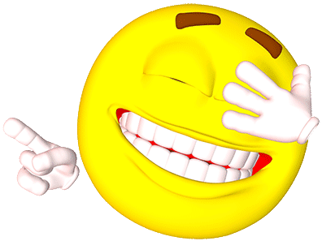

Puns are wordplay, when you make a pun you're replacing a phrase in a senteance with another that sounds alike but has a different meaning. For example a pun could be: Wow sir, you are very punny!
Well to take our example from earlier, you take two words that sound the same and use one that has a different meaning for the same purpose as the other so pun and fun are simaler and you can make pun-ny, a twist of funny. The best part about puns is the punchline is very simple to create and with practice and a good vocabulary you can be a master at it in no time.
The best way to get good at puns is to practice, use the words from different topics to make puns in the following sentences.
Wow, I am so very hungry, I need to get energy since I have a lifegaurd interview for my beach job which means a lot is a stake here. I can't bare imagining how sad I would be if I didn't get the job, I would be lieing to my self if I thought I would survive. I like meetings and interviews but at least in mee-OWW lego bricks are deadly! Anyway I was saying that at least in meetings it isn't one bad lifegaurd who is jacked and talks in slang. I imagine him or her saying something like: sorry nah; at the end of the interview, man I need to relax.
A knock knock joke is an old and simple formula to make a joke where one person will say knock knock as if to knock on a door, the second person would respon who's there to see who or whats at the door then the first replies with a setup such as I eat mop which the second person must repeat and add the word who at the end of the phrase then ending the joke with a final remark from person a. Here is a complete example:
Person A: Knock Knock
Person B: Who's There?
Person B: I eat mop (this is the setup)
Person B: I eat mop who?
Person A: Eww! Why would you do that! (this is the punchline)
If you don't understand the joke try saying it outloud or to a friend
Since knock knock jokes are and old and simple premise most of the jokes that can be done have so if you're lazy you can search some up but if you want to make one like the reason you're on this webpage for the simplist way is to thing of a word or phrase that ends with a who and say it as the setup removing the who part and make person b realize what they just said by having a reaction to it for the punchline similar to the first example. For example you could say yoodelayhee for your setup and after person b retells your words blandly you could sing yoodelayhee-who back to them which is yordling.
img src=" html5_with_css3_+_semantics.png" width="165" height="64" alt="The Code Check For Nima&qrsuo;s website">